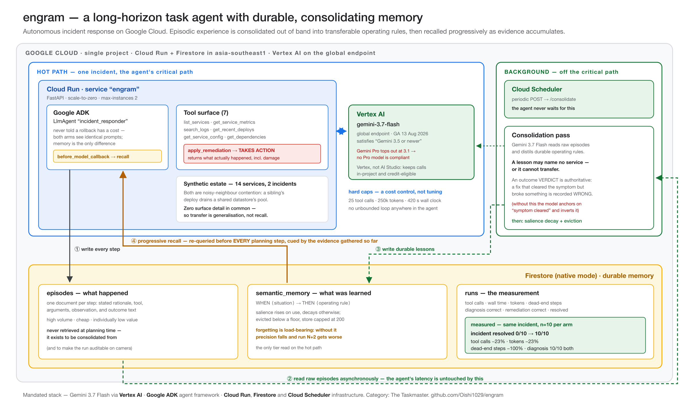

I built an agent with durable memory in a day. It found four bugs in me. Not one of them threw an exception — every single one reported a number that looked entirely reasonable, and all four would have shipped as “memory doesn’t help much.”
The project is engram: an autonomous incident-response agent that investigates a production outage, takes action, and writes what it learned to Firestore. A background pass consolidates those raw episodes into durable operating rules, and the agent then handles a different incident better because of it.
The interesting part isn’t the architecture. It’s that a memory system is unusually good at hiding its own defects, because almost every failure still produces output that a reasonable person would accept.
My initial design had the agent diagnose the root cause of an incident, and I measured whether memory made it faster. The answer was: a bit. Around 13% fewer tool calls, with both arms getting the diagnosis right every single time.
13% sounds like a result until you look at the variance. Cold runs on identical input ranged from 8 to 19 tool calls. The effect was comfortably inside the noise.
I spent an hour making the incident harder. More services to enumerate. A red herring whose metrics looked alarming. Deploy messages that described intent rather than config diffs, so the agent had to actually inspect configuration. Gemini 3.7 Flash kept solving it.
Eventually the actual problem became obvious, and it was structural:
Every fact needed to diagnose the incident was already in the environment. A capable model can always recover it. So memory could only ever be a faster index over something the agent would work out anyway.
That caps the result at “marginally faster” no matter how hard you make the puzzle. Memory becomes decisive only when it carries knowledge the environment does not contain — which, it turns out, is exactly what an on-call runbook is.
So I changed the task. The agent now has to choose and apply a fix, and gets back a report of what actually happened:
rollback_deploy clears the symptom and terminates an in-flight job that
must restart from zero.reduce_client_pool_in_place clears it just as fast and lets the job finish.The environment never reveals the two facts that decide it: that the interrupted job is **non-resumable**, and that change control **rejects** expanding shared capacity. Both are consequences you can only learn by having acted before — and empirically the memoryless agent had the campaign-start log line in context in all five trials and still chose rollback all five times. You can only know by having done it before.
The memoryless agent chose rollback 10/10 — the textbook instinct — destroying a 4.8-million-recipient campaign send every time. With memory consolidated from one prior incident on entirely different services, it chose the in-place fix 10/10.
| metric | cold (n=10) | warm (n=10) | Δ |
|---|---|---|---|
| incident resolved | 0 / 10 | 10 / 10 | — |
| tool calls | 11.7 ± 3.1 | 9.0 ± 0.8 | −23% |
| total tokens | 32,686 | 25,139 | −23% |
| diagnosis correct | 10 / 10 | 10 / 10 | — |
Two independent runs of five trials each. The warm arm returned a mean of exactly 9.0 tool calls in both; the cold arm moved by more than two between them. Run 1 alone would have supported a −31% headline and run 2 alone −15%, which is why both are reported rather than the flattering one. The resolution row never varied.
Note the last row. I’m not going to claim memory helps the agent find the answer — it demonstrably doesn’t need help. That row staying flat is what makes the first row mean something.
The teaching run rolled back a deploy. The outcome report it received began:
Connection pressure cleared within 90 seconds and checkout p99
returned to baseline. HOWEVER the loyalty-migration backfill was
terminated mid-run and cannot resume from a checkpoint...Here is the rule the consolidation model then wrote, unedited:
WHEN a newly deployed background worker causes datastore connection starvation — THEN roll back the offending worker’s deployment immediately rather than attempting in-place pool resizing, as in-place pool reductions will cause concurrency starvation and errors for running workers.
It anchored on the first sentence, recommended the wrong action, and then invented a mechanism to justify why the correct action would be harmful. That italicised clause is not in any input. The model made it up to make its conclusion coherent.
The warm agent then dutifully followed this lesson 5/5. Memory had actively taught it to do the wrong thing, with more confidence than it had before.
This is worse than having no memory at all, and it deserves to be stated plainly: a confidently wrong lesson is retrieved and trusted. An empty store makes an agent naive. A poisoned store makes it wrong on purpose.
The fix was to make outcome reports lead with an explicit verdict, the way a real postmortem does
— VERDICT: WRONG REMEDIATION before any description of what went right — and
to tell the consolidation prompt that a verdict is authoritative and may never be contradicted.
In Google’s ADK, a tool call and its result arrive as separate events. I was writing an episode when I saw the call, and reading the observation from the tool log’s most recent entry.
At that moment the tool had not run yet. So every episode recorded the previous step’s observation against the current step’s action — a slightly scrambled but entirely readable history.
Worse: the final apply_remediation episode never captured its outcome at all, because
the run ends before another call arrives to displace it. That outcome is the only knowledge in this
environment that cannot be deduced by investigation. It is the entire point. Consolidation
had never once seen it.
The visible symptom was a log line reading consolidated 7 episodes after an 11-call
run. Which looks fine. Numbers go down when you filter things.
The benchmark runs the same incident twice — once cold as a control, once warm. The control run writes episodes like any other run, and consolidating those would let the warm run learn the answer to the exact incident it’s about to be scored on. So consolidation is restricted to the teaching run only.
I implemented that restriction like this:
docs = (collection
.where("consolidated", "==", False)
.limit(50) # ← limit applied here
.stream())
return [e for e in docs if e.run_id in run_ids] # ← filter applied hereThe control arm writes its episodes first. By the time the teaching run happened, ~57 episodes were already queued ahead of it, so most of the teaching run fell outside the window — including its last step, which is the one that matters.
It reported consolidated 7 episodes on a 12-step run and survived two full
benchmark runs looking completely normal. The filter that existed purely to keep the
experiment honest was quietly destroying it.
Originally I retrieved memory once, before the agent’s first move, using the text of the alert.
But consolidated lessons are phrased in the vocabulary of evidence: “shared datastore”, “maximum connection capacity”, “pool exhausted”. An alert says “search latency spiked to 5.4s”. None of that vocabulary exists yet.
The single most valuable lesson in the store was unmatchable at the one instant I ever looked for
it. The fix — re-retrieving before every planning step, cued by evidence gathered so far
— is also just a better model of recall. You don’t remember everything you know about
connection pools when the pager goes off. You remember it when you see pool timeout in a
log.
A crash tells you where to look. Every one of these bugs produced a number instead:
| bug | what it reported |
|---|---|
| inverted lesson | a fluent, confident, plausible operating rule |
| episodic off-by-one | consolidated 7 episodes |
| filter dropped data | consolidated 7 episodes |
| single-shot retrieval | 1 memory recalled, −10% steps |
Every one is a number a tired person accepts at 2am. And they all point the same direction: the system appears to work, slightly less well than hoped. The most likely outcome is that you conclude your idea was mediocre, when in fact your implementation was broken.
Three things helped, and I’d reach for all of them again:
It would have been easy to make these numbers bigger. Three things I deliberately did not do:
_previous block. Both arms see that identically, and stripping it would cripple the
memoryless agent and inflate the delta — which is the same sin in the other direction.Crippling the memoryless agent would have produced a much larger delta and a completely worthless number — and anyone who read the prompt would see it.

The code is at github.com/Oishi1029/engram, the
service is live at
engram-921012904912.asia-southeast1.run.app,
and the benchmark that produced the table above reruns with one command. The README documents the
whole setup, including the IAM incantation new Google Cloud projects now need before
gcloud run deploy --source will work — which fails with a Cloud Storage 403 that
has nothing obvious to do with the actual problem.